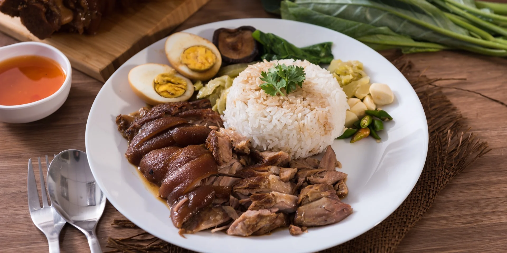
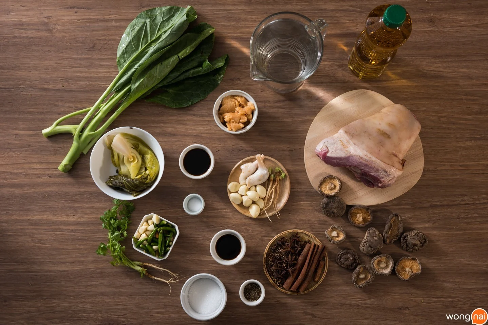
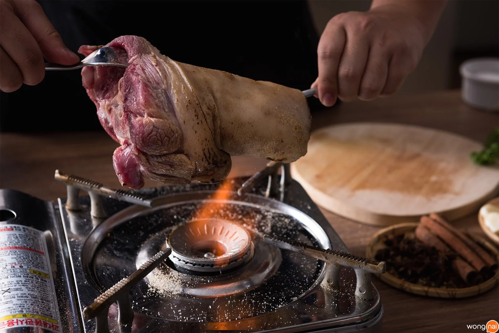
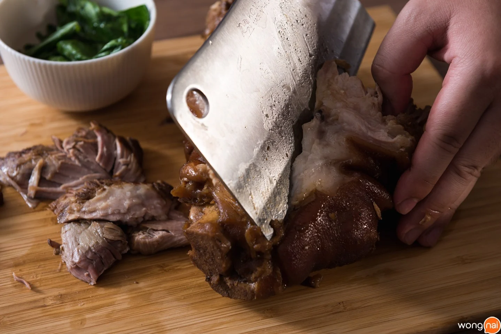

วิธีการทำข้าวขาหมู

วัตถุดิบ
- ขาหมู 1 ขา (ประมาณ 2 กิโลกรัม)
- อบเชย 4 แท่ง
- โป๊ยกั้ก 4 ดอก
- ข่าแก่ 2 ชิ้น
- รากผักชี 5 ราก
- พริกไทยดำโขลกละเอียด 1 ช้อนโต๊ะ
- เห็ดหอม 8 ดอก
- น้ำตาลปี๊บ 150 กรัม
- น้ำตาลทราย 3 ช้อนโต๊ะ
- กระเทียมจีน 10 กลีบ
- ซีอิ๊วขาว 1/4 ถ้วย
- เกลือป่น 1/2 ช้อนโต๊ะ
- ซอสปรุงรส 3 ช้อนโต๊ะ
- น้ำเปล่า 3 ลิตร
- น้ำมันพืช 1 ขวดใหญ่
- ผักกาดดอง 500 กรัม
- ผักคะน้า สำหรับกินคู่
- ผักชี / พริกขี้หนู / กระเทียม สำหรับ กินคู่
วิธีการทำ
STEP 1 : เผา + ทอด ขาหมู
- เอาขาหมูไปเผาเพื่อกำจัดขนที่หลงเหลือออก เมื่อดูว่าไม่มีขนเหลือแล้วขูดส่วนที่ไหม้เกรียมออก นำไปล้างให้สะอาด
- ซับขาหมูให้แห้งแล้วนำไปทอดโดยใช้ไฟแรง ทอดในน้ำมันโดยไม่ต้องใช้น้ำมันท่วม โดยเราจะทอดแบบกลับด้าน เพื่อไม่ให้เปลืองน้ำมัน จนหนังหมูฟู แล้วตักขึ้นพักไว้ให้สะเด็ดน้ำมัน

STEP 2 : ตุ๋นขาหมู
- ตั้งกระทะบนเตาไฟโดยใช้ไฟอ่อน จากนั้นใส่อบเชยลงไป ตามด้วยโป๊ยกั้ก กระเทียม ข่าแก่ และพริกไทยดำลงไปคั่วจนหอม
- นำขาหมูที่ทอดแล้วมาใส่หม้อ ใส่เครื่องเทศที่คั่วไว้และรากผักชีตามลงไป
- นำน้ำตาลปี๊บใส่ในกระทะใบเดิม ตั้งจนน้ำตาลปี๊บละลายและมีสีน้ำตาลเข้ม ใส่น้ำลงไปรอให้น้ำตาลละลายแล้วจึงนำไปเทใส่หม้อขาหมู
- เติมน้ำเปล่าจนท่วมขาหมู นำไปตั้งไฟโดยใช้ไฟกลาง ปรุงรสด้วยซีอิ๊วขาว ซอสปรุงรส เกลือป่น น้ำตาลทราย พอเดือดจึงใส่เห็ดหอม
- ปรับไฟอ่อนแล้วตุ๋นทิ้งไว้ประมาณ 3 ชั่วโมง จึงใส่ผักกาดองลงไป ตุ๋นต่ออีกประมาณ 2 ชั่วโมง
STEP 3 : ลวกคะน้า + จัดเสิร์ฟ
- ลวกคะน้าในหม้อตุ๋นขาหมู แล้วนำมาหั่นเป็นเครื่องเคียง
- นำขาหมูขึ้นจากหม้อ เลาะเนื้อออกแล้วเสิร์ฟกับข้าวสวยร้อน ๆ คะน้าลวก ผักกาดดอง พริกขี้หนู กระเทียม

| ข้อมูลโภชนาการข้าวขาหมู |
| พลังงานทั้งหมด 409
| พลังงานจากไขมัน 117 |
| % ร้อยละของปริมาณที่แนะนำต่อวัน*
|
| ไขมันทั้งหมด 13 g |
20% |
| คลอเรสเตอรอล 0 mg |
0% |
| โซเดียม 450 mg |
19% |
| โพแทสเซียม 0 mg |
0% |
| คาร์โบไฮเดรตทั้งหมด 53g |
18% |
| โปรตีน 20g |
40% |
ข้อมูลและรูปภาพจาก https://www.wongnai.com/recipes/stewed-pork-leg-on-rice
ข้อมูลข้อมูลโภชนาการจาก https://www.calforlife.com/th/calories/Pork-Leg-with-Rice